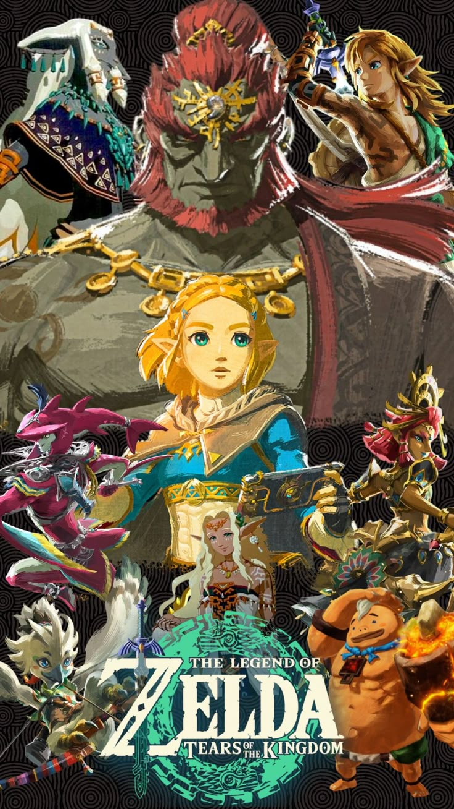

La libertad en Hyrule
Con entregas como Breath of the Wild y Tears of the Kingdom, la franquicia redefinió lo que significa la exploración en los juegos de aventura.

Con entregas como Breath of the Wild y Tears of the Kingdom, la franquicia redefinió lo que significa la exploración en los juegos de aventura.
